阿里首部创业记录片问世：马云和他永远的少年阿里，看哭所有创业者！
来源：2017-08-10 /Mikel/ Mikel国际金服中心
16年来首次曝光的阿里创业纪录大片：马云和他永远的「少年阿里」。阿里早期创始人及合伙人亲身讲述。
无数珍贵镜头，16年首次曝光，历时8个月的采辑，超过30000分钟的视频素材，无论你之前看过多少个阿里、马云的视频，小咖认为，这个决不能错过！
阿里巴巴官方出品
《DreamMaker》l 时长55分16秒
这个视频只有55分钟，为什么说「只有」呢？因为这55分钟可能对你的影响太大太大，以至于55分钟太他妈的值了！
我凌晨3点钟看完，迫不及待要分享给大家！
1999年，阿里巴巴在马云的毛坯房里创立。没有人知道：他攒的钱撑到夏天也就差不多花完了，连每个员工最少工资都快发不出来。
他每次从外面回来就说：我又拒绝了一家VC。。。我又拒绝了一家。。。有一天他说，他已经拒绝了37家VC。结果近些年谜底才被揭晓，原来是马云当时被37家VC拒绝了，当时没有人相信他说的话。
16年前，人人都觉得他是个骗子，他讲的东西没几个人能听懂。。。
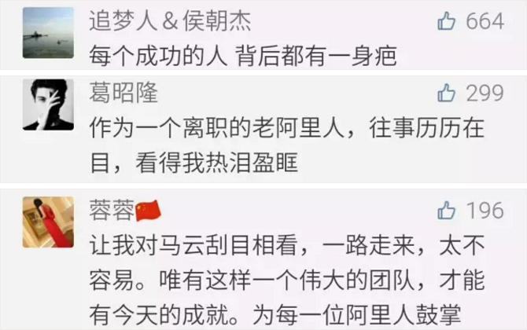
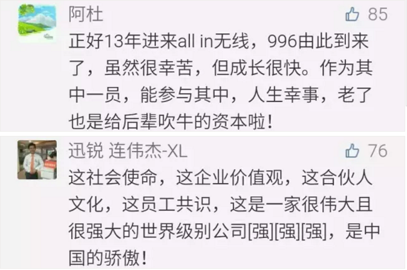
【马云和阿里的珍贵老照片】
▼1996年，马云和同仁在中国黄页的合影
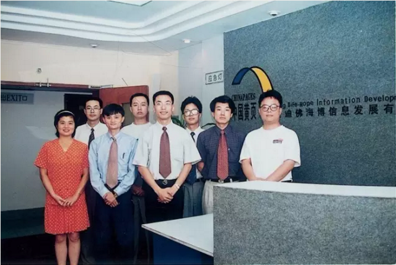
▼1996年，马云在中国黄页
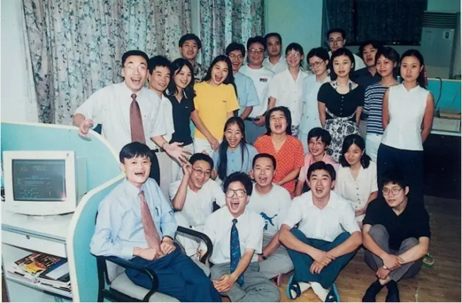
▼1999年，创业初期，阿里巴巴全体员工合影。
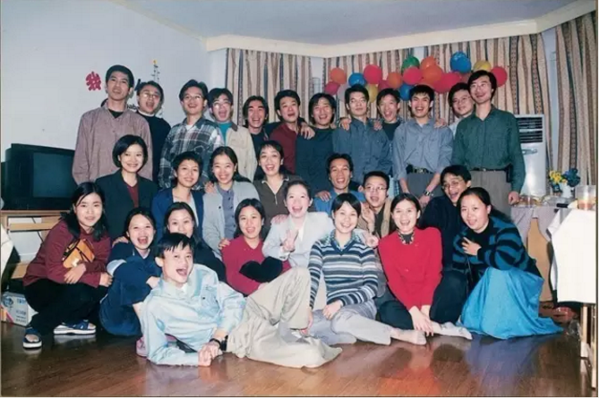
▼2000年，马云在国家外经贸部演讲
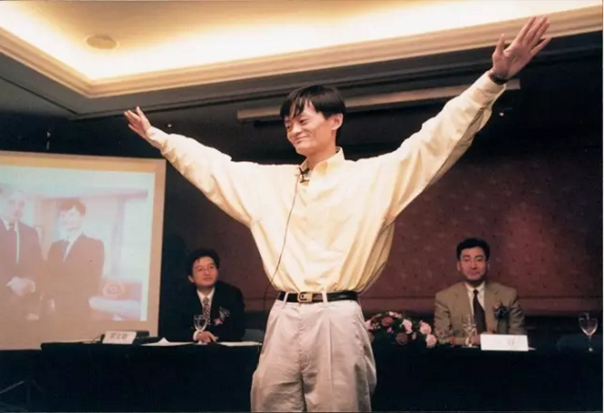
▼2000年，马云“登上”福布斯杂志封面
▼2000年，马云在北京经贸大学演讲
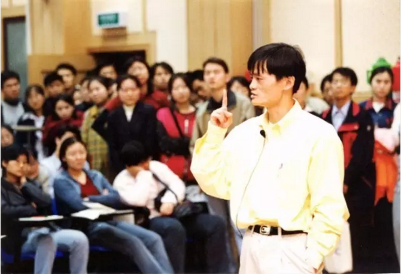
▼2000年，马云在民宅湖畔花园里召开员工会议
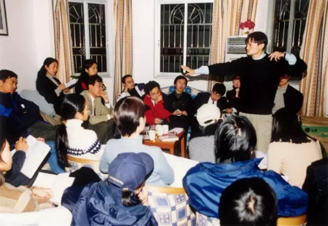
▼2003年，淘宝创始人团队合影
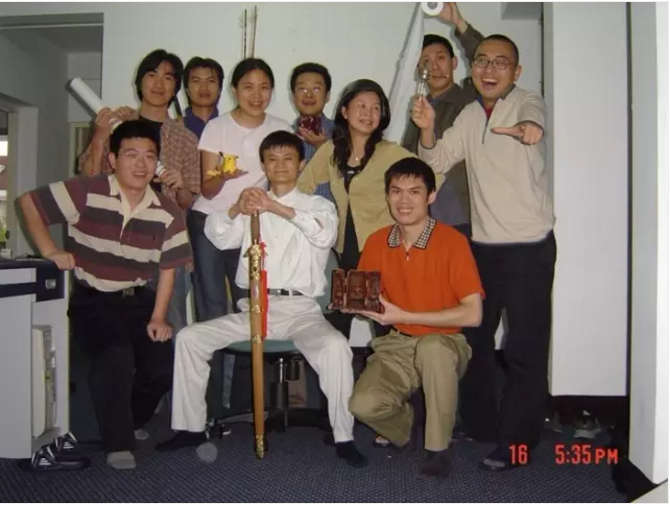
▼2006年，马云在年度员工大会上演讲
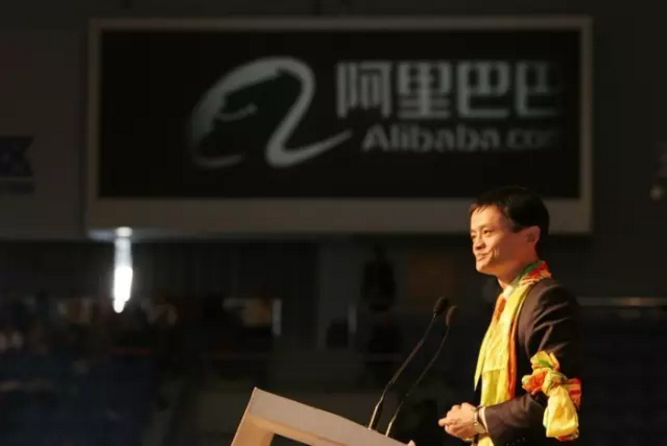
▼2006年，马云在淘宝三周年“江湖大会”上
以风清扬的造型亮相
▼2014年，阿里巴巴在纽交所上市
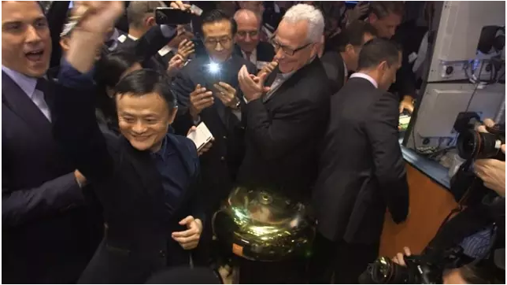
阿里牛逼的背后，是这个飞速发展的互联网时代，你看完总想自己也做点什么，生怕辜负了这个最好的时代。
马云当年在北京失败而归时，在出租车上说：
"一切得重头开启，失败了也无所谓，我至少把一个概念告诉了别人。我不成功，会有人成功，但首先一点，我希望中国人早点成功，不要再拖下去了。"
所以，我们每一个人也不要再拖下去了。
那么你的梦想是什么？
梦想还是要有的，万一实现了呢。从前觉得这句话太土、太鸡汤。今天看完「造梦者」马云的「少年阿里」的故事，我感受到从未有过的力量。
声明：部分图片来自阿里味儿。